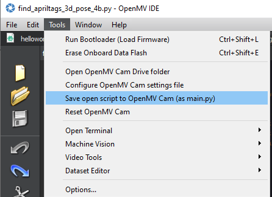

❄️ Lab3: Camera Calibration
Contents

❄️ Lab3: Camera Calibration#
A note on this document
This document is known as a Jupyter notebook; it is used in academia and industry to allow text and executable code to coexist in a very easy to read format. Blocks can contain text or executable code. To run the executable code in this notebook, click  . For blocks containing code, press
. For blocks containing code, press Shift + Enter, Ctrl+Enter, or click the arrow on the block to run the code. Earlier blocks of code need to be run for the later blocks of code to work.
Caution
Interactive matplotlib figures do not seem to work properly in jupyter notebook and Google Colab. ```
Objectives#
The purpose of this lab is to calibrate the OpenMV camera that will be used in your Project 2.

Background#
{kind=link}
💻 Procedure#
Read this page thoroughly.
Then, go to Colab by clicking the icon at the end of this page and complete the sensor calibration. AR means action required in Colab.
OpenMV Cam#
Go to https://openmv.io/pages/download to download the latest OpenMV IDE. Install the software on your computer.
Connect the camera to your computer and run the software.
Download
find_apriltags_3d_pose_4.pyfrom Teams.In OpenMV IDE, go to File > Open File and select
find_apriltags_3d_pose_4.pyto load.Click the Connect button on the bottom left of the IDE.
Click the Start button (green arrow).
Click the
Serial Terminaltab at the bottom of the window.Bring in blocks under the camera to detect them.
{kind=link}
On Serial Terminal, you will find numbers similar to
2,3,4.041906,-1.517668,-9.712036,181.984062,358.371687,224.128056,4,5.561428,1.540591,-9.330090,160.538206,354.057860,201.279116
The descriptions of the data fields are as follows.
Field 1: Number of AprilTags detected.
Field 2: AprilTag ID
Field 3: x value
Field 4: y value
Field 5: z value
Field 6: Rx value
Field 7: Ry value
Field 8: Rz value
Field 9: AprilTag ID (if there are more than 1 AprilTag)
Field 10: x value
Field 11: y value
Field 12: z value
Field 13: Rx value
Field 14: Ry value
Field 15: Rz value
:
:
The values are based on large-sized AprilTags. So, the distances returned by the program must be scaled. For example, \(z = -9.712\) is incorrect, and it should probably be 11 cm. So, we need to find the scale factor and offset.
We must solve a least squares regression problem to find a linear equation that best fits the measured data.
The goal is to find \(m\) and \(b\) such that \( d = mz + b \) best approximates the linear relationship between \(d\) and \(z\), where \(d\) is the actual distance between the camera lens and the block and \(z\) is the OpenMV output.
Note
Your b should be close to 0.
Place the camera at the origin and a block with an AprilTag at \((x,y)\) = (10, 0) cm. Place the block on top of another block 1 inch above the ground.

As you move the block 1 cm in the camera’s \(z\) direction at a time, record the \(z\) values returned by the April tag detection in OpenMV IDE. The \(x\) direction on the grid is the \(-z\) direction of the camera.
AR: Take measurements and put them in the array below
import numpy as np
import matplotlib.pyplot as plt
# Distances from 8 cm to 23 cm
# Change the range if needed
d = np.arange(0.08, 0.24, 0.01)
# Add your measurements here
# Do not add negative signs, e.g.,
z = -np.array([4.14, 4.67, 5.16, 5.63, 6.13, 6.64, 7.12, 7.65, 8.13, 8.69, 9.18, 9.73, 10.28, 10.70, 11.30, 11.83])
# Write your code here
Repeat the same for the \(x\) direction (horizontal direction) of the camera - It is the \(y\) direction of the grid. You can ignore the offset this time because the pixel at the center of the image is always \((x, y)\) = (0,0). The offset you observe while taking measurements is due to the misalignment of the camera’s \(x-y\) plane and the grid’s \(x-y\) plane.
You don’t have to repeat it for the camera’s \(y\) direction (vertical direction). We can use the same fitting values for the \(x\) direction. They should be the same, theoretically.
AR: Take measurements and put them in the array below
# At 0.20 m away
d = np.arange(-0.05, 0.06, 0.01)
x = np.array([-4.34, -3.52, -2.75, -1.85, -1.13, 0.0, 0.85, 1.68, 2.50, 3.28, 4.12])
# Write your code here
Update OpenMV MicroPython#
Since we are not going to use the orientation of AprilTags, we don’t have to send it to the PC. Update the mz, bz, mx, my values in your MicroPython code.
tag_output = list()
num_tags = 0
# mz is the slope for the z direction
# bz is the offset for the z direction
# mx is the slope for the x direction
# my is the slope for the y direction, and it should be the same as mx
mz = 1
bz = 0
mx = 1
my = 1
while(True):
clock.tick()
:
:
Save the code to OpenMV cam as shown below
{kind=link}
click  to write your code.
to write your code.
🚚 Deliverables#
Deliverable 1 (50 points)#
Provide the LSE plots for the x-axis and z-axis of the camera. Provide the mz, bz, mx, and my values.
Deliverable 2 (??? points)#
Have a very nice and relaxing holiday!